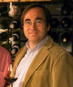

Presentation:
- Name:
- Claes Lofgren
- Born:
- 1955
- Lives:
- Stockholm
- Family:
- Wife and two kids.
He is a swedish photographer in the world of wine and spirits. He has travelled the world in more then twenty years in search of pictures for his archive. He has visited most of the wine producing countries of the world and has been published by most major wine magazine. He is a member of the Swedish Wine Writers Association, The Circle of wine Writers UK and FIJEV.